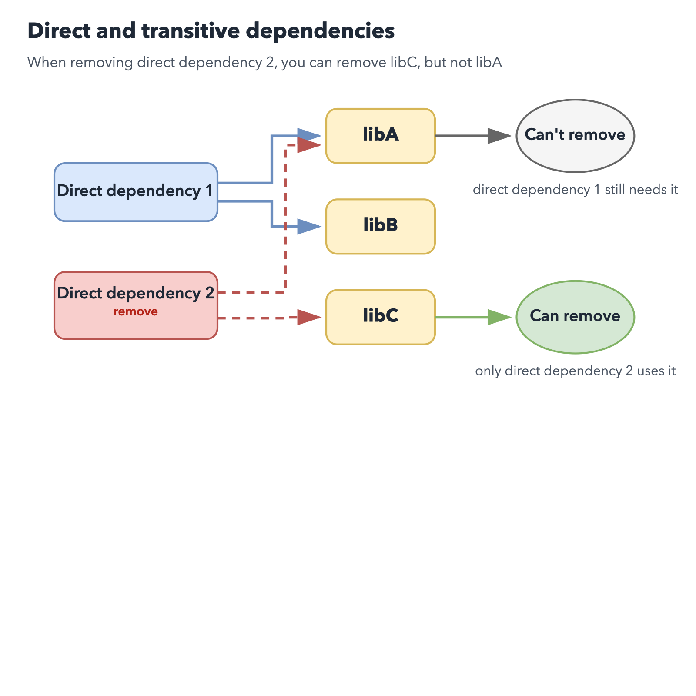

Breaking Free from Virtual Environments: A New Python Paradigm for 2026
Breaking Free from Virtual Environments: A New Python Paradigm for 2026
- Event:
PythonAsia 2026
- Presented:
2026/03/22 nikkie
Hello, PythonAsia! (Who are you?)
Machine learning engineer in Tokyo. Developing Speeda AI Agent (with A2A) [1]
@ftnext SpeechRecognition (9k⭐️) maintainer
What is something developers used to manage themselves all the time, but hardly manage anymore?
The answer is virtual environments
Hard to believe? 🙋
many developers no longer need to manage virtual environments directly
Various Python project management tools
CLI execution using temporary virtual environments
inline script metadata (PEP 723)
may affect this landscape😅
We've reached an agreement to acquire Astral.
— OpenAI Newsroom (@OpenAINewsroom) 2026年3月19日
After we close, OpenAI plans for @astral_sh to join our Codex team, with a continued focus on building great tools and advancing the shared mission of making developers more productive.https://t.co/V0rDo0G8h9
Breaking Free from Virtual Environments: Agenda
Virtual Environment Basics (quick🏃♂️)
The Pain of Manual Virtual Environment Management (quick🏃♂️)
Evolution of Solutions (Main Part)
Solutions Available as of 2026
CLI execution using temporary virtual environments
inline script metadata (PEP 723)
1️⃣ Virtual Environment Basics
Why do we (Python developers) need virtual environments?
From the Python Tutorial
$ python -m venv .venv --upgrade-deps
$ source .venv/bin/activate
(.venv) $ python -m pip install sampleprojectA virtual environment is a directory
% python -m venv --help
usage: venv ENV_DIR [ENV_DIR ...].venv/ has been created% ls -al
drwxr-xr-x@ 7 nikkie staff 224 Mar 20 12:42 .venvWhy create a directory?
To serve as the installation destination for third-party libraries
Without a virtual environment, there is only one installation location on the machine
What's inside .venv/? [2]
.venv
├── bin
│ ├── activate
│ ├── pip
│ ├── pip3
│ ├── pip3.14
│ ├── python -> python3.14
│ ├── python3 -> python3.14
│ ├── python3.14 -> /Library/Frameworks/Python.framework/Versions/3.14/bin/python3.14
│ └── 𝜋thon -> python3.14
├── lib
│ └── python3.14/
└── pyvenv.cfg.venv/bin/python
A symbolic link to the Python interpreter installed on your machine
The
activatescript updates thePATHenvironment variable so this interpreter is foundThe interpreter and standard library use this path
.venv/lib/python3.14/site-packages/
The directory where third-party libraries are installed
Separated per virtual environment, so different versions can coexist
2️⃣ We Are the Virtual Environment Management Tool
$ python -m venv .venv --upgrade-deps
$ source .venv/bin/activate
(.venv) $ python -m pip install sampleprojectLet's list the pains of manual management (4 in total)
Reproducing a virtual environment: pip freeze
(.venv) $ python -m pip freeze > requirements.txt$ python -m venv recreate-env --upgrade-deps
$ source recreate-env/bin/activate
(recreate-env) $ python -m pip install -r requirements.txtThere are two types of dependencies
(.venv) $ % python -m pip install httpx(.venv) $ python -m pip freeze
anyio==4.12.1
certifi==2026.2.25
h11==0.16.0
httpcore==1.0.9
httpx==0.28.1
idna==3.11Problem 1: pip freeze output is hard to manage
Both direct and transitive dependencies are combined into a single
requirements.txtIf extras were specified for direct dependencies [3], extra information is lost in
requirements.txt
Problem 2: Hard to uninstall specific packages
When removing a direct dependency, removing transitive dependencies is difficult
Direct dependency 1 depends on libA and libB
Direct dependency 2 depends on libA and libC

Problem 3: Virtual environments proliferate per script
Just want to quickstart a library, but a new virtual environment must be created each time
.
├── .venv/
└── script.pyProblem 4: Linters and formatters installed in every virtual environment
CLIs used during development must be installed in every virtual environment
Keeping them up to date across all projects is less convenient
Our Pain as Virtual Environment Managers
pip freezelumps direct and transitive togetherCan we remove transitive when removing direct?
Too many virtual environments for scripts
Installing and updating CLIs in every virtual environment
3️⃣ How the Community Has Addressed These Problems
pip freezelumps direct and transitive togetherCan we remove transitive when removing direct?
Too many virtual environments for scripts
Installing and updating CLIs in every virtual environment
pip-tools
In place of
pip freeze: pip-compile & pip-sync [4]

pip-tools workflow
requirements.inhttpxProblem 1: direct and transitive lumped together — solved
pip-tools workflow
requirements.txt (direct & transitive)anyio==4.12.1
# via httpx
certifi==2026.2.25
# via
# httpcore
# httpx
h11==0.16.0
# via httpcore
httpcore==1.0.9
# via httpx
httpx==0.28.1
# via -r requirements.in
idna==3.11
# via
# anyio
# httpxpip-tools workflow
Use pip-sync to sync the virtual environment to
requirements.txtChange direct dependencies in
requirements.into update bothrequirements.txtand the virtual environment (Problem 2 solved)
Poetry
$ poetry new
$ poetry add httpx
$ ls
poetry.lock pyproject.tomlEven less awareness of virtual environments [5]
poetry run to run in the virtual environment$ poetry run python -m pip freezeWidely adopted for Python project development (around 2020) [6]
Rye [7]
Written in Rust (faster than Python-based tools)
Python version management + virtual environment management
$ rye init
$ rye add httpx
$ rye syncAnd then came uv
Emerged as a Rust implementation of pip. drop-in replacement for pip and pip-tools workflows.
Expanded to also manage Python itself and project virtual environments [9]
$ uv init
$ uv add httpx
$ uv syncThe path to uv
Poetry (and Pipenv) made Python project virtual environment management easy
Rust-based Rye: also manages Python itself (virtual env management via pip-tools)
uv incorporated Rye's features along with pipx and PEP 723 (introduced next)
3️⃣-1️⃣ CLI Execution Without Virtual Environment Management
Approach to Problem 4: "Installing and updating CLIs in every virtual environment"
Using Ruff as an example, but applicable to any CLI on PyPI
Before: Install to virtual environment, then run CLI
$ # python -m venv .venv --upgrade-deps
$ source .venv/bin/activate # project's virtual environment
(.venv) $ python -m pip install ruff
(.venv) $ ruff formatNow, CLI execution using temporary virtual environments is possible
uvx ruff format (
uv tool run ruff format) [10]or pipx run ruff format
Installation
curl -LsSf https://astral.sh/uv/install.sh | shbrew [12]python3 -m pip install --user pipxThe tool installs into a temporary virtual environment
Demo Manual venv vs uvx
$ python -m venv format-env --upgrade-deps
$ source format-env/bin/activate
(format-env) $ python -m pip install ruff
(format-env) $ ruff format$ uvx ruff formatRecommendations for uvx and pipx run
We don't touch virtual environments (the tool handles it)
Use the latest CLI version without management overhead
Works across multiple projects (Problem 4 solved)
Here's where I use it [15]
$ uvx cookiecutter gh:simonw/llm-plugin$ uvx --from sphinx --with sphinx-new-tab-link \
sphinx-build -M html source build$ pipx run build
$ pipx run twine check dist/*FYI: You can also install globally on your machine
uv tool install
pipx install (Installing stand alone command line tools)
However, manual upgrade is required (uv tool upgrade · pipx upgrade-all)
3️⃣-2️⃣ inline script metadata
Approach to Problem 3: "Too many virtual environments for scripts"
Applicable to any Python script
https://packaging.python.org/en/latest/specifications/inline-script-metadata/
A script using third-party libraries
from datetime import datetime
import httpx
from rich.pretty import pprint
resp = httpx.get("https://peps.python.org/api/peps.json")
data = resp.json()
peps_desc_created = sorted(
data.items(),
key=lambda item: datetime.strptime(item[1]["created"], "%d-%b-%Y"),
reverse=True,
)
pprint([(k, v["title"], v["created"]) for k, v in peps_desc_created][:10])
Before: Install dependencies to virtual environment, then run script
$ python -m venv .venv --upgrade-deps
$ source .venv/bin/activate
(.venv) $ python -m pip install httpx rich
(.venv) $ python script.pyPEP 723 – Inline script metadata [17]
# /// script
# requires-python = ">=3.13"
# dependencies = [
# "httpx",
# "rich",
# ]
# ///
Just run with a tool that supports inline script metadata
The tool sets up a virtual environment with dependencies installed and runs the script
The tool reads the metadata
Uses a Python interpreter matching requires-python
Sets up a temporary virtual environment with dependencies installed, then runs the script
uv can write inline script metadata! [20]
uv add --script script.py httpx rich [21]
# /// script
# requires-python = ">=3.13"
# dependencies = [
# "httpx>=0.28.1",
# "rich>=14.3.3",
# ]
# ///Demo Manual venv vs uv run script.py
$ python -m venv script-env --upgrade-deps
$ source script-env/bin/activate
(script-env) $ python -m pip install httpx rich
(script-env) $ python script.py$ uv add --script script.py httpx rich
$ uv run script.pyRecommendations for inline script metadata
We don't touch virtual environments (the tool handles it) (Problem 3 solved)
The script declares its own dependencies
Easy to reproduce and run on another machine [23]
Here's where I use it
Finally, Tool Selection
Considering Python project management since Poetry
uv🏅
Hatch❤️
Poetry
Poetry made things much easier (but challenges around CLI and script execution remained)
Slower to adopt some newer specs (not my first recommendation)
uv🏅
pyproject.toml)$ uv add httpx
$ uv syncCurrently the top choice for broadly supporting everything from
uvxto inline script metadata with one tool (but watching OpenAI)
Hatch
Also supports Python project management, but manages multiple virtual environments
Can use inline script metadata, but lacks
uvx-equivalent functionality
Hatch is interesting ❤️
$ hatch env show
Standalone
┏━━━━━━━━━┳━━━━━━━━━┳━━━━━━━━━━━━━━┳━━━━━━━━━┓
┃ Name ┃ Type ┃ Dependencies ┃ Scripts ┃
┡━━━━━━━━━╇━━━━━━━━━╇━━━━━━━━━━━━━━╇━━━━━━━━━┩
│ default │ virtual │ │ │
├─────────┼─────────┼──────────────┼─────────┤
│ types │ virtual │ mypy>=1.0.0 │ check │
└─────────┴─────────┴──────────────┴─────────┘Most tools including uv use a single virtual environment per Python project
Summary 🌯 Breaking Free from Manual Virtual Environment Management
Virtual environments remain important as installation destinations for third-party libraries
However, today, many developers no longer need to manage virtual environments directly.
Developers are abstracted away from manual virtual environment management
CLI execution: tools install into a temporary virtual environment
Script execution: inline script metadata
Let's try it and make life easier!
uv (
uvx,uv run)pipx (
pipx run)
Do beginner tutorials really need virtual environment setup commands?
Isn't it time to revisit Python tutorials and beginner books?
IMO: For beginners who just want to write scripts in Python, starting with inline script metadata might lower the barrier
Professional Python developers are still recommended to understand virtual environments
Thank you for listening
Happy Python Development